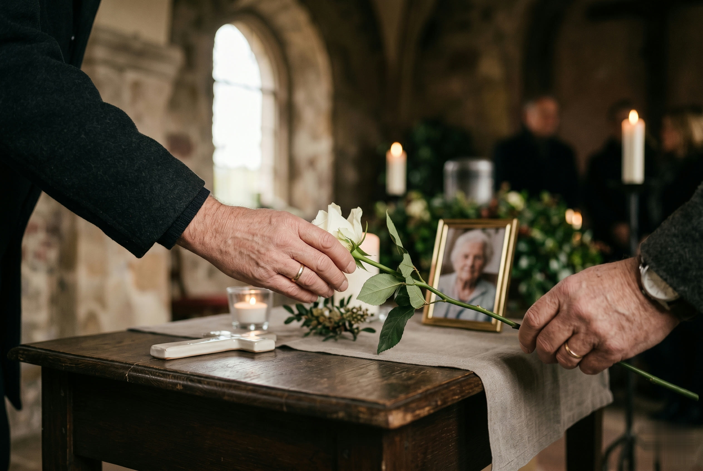

Vieles ist zu regeln. Nichts davon allein.
Im Trauerfall werden Sie mit Fragen konfrontiert, die Sie so noch nie beantworten mussten. In dieser schweren Zeit möchten wir Ihnen eine wertvolle Hilfe sein · diese Seite zeigt Ihnen ruhig, was zu tun ist.
Sie möchten nicht lesen, sondern sprechen? Rufen Sie an · wir sagen Ihnen, was zu tun ist.
0951 655 55Schritt für Schritt. Ohne Eile.
Arzt verständigen
Nur ein Arzt darf den Tod feststellen und die Sterbepapiere ausstellen. Verständigen Sie den Haus- oder Notarzt · im Krankenhaus oder Pflegeheim übernimmt das das Personal. Stellt der Notarzt nur ein einfaches Formular aus, muss der Hausarzt oder ein niedergelassener Arzt die vollständigen Leichenschaupapiere nachreichen.
Uns anrufen
Unter 0951 655 55 erreichen Sie uns 24 Stunden täglich, auch an Sonn- und Feiertagen. Wir besprechen mit Ihnen, wie es weitergeht · und kommen auf Wunsch jederzeit auch zu Ihnen nach Hause.
Das Standesamt nicht vergessen · wir übernehmen das
Spätestens am nächsten Werktag soll der Sterbefall dem zuständigen Standesamt angezeigt werden. Das erledigen wir für Sie · einschließlich der Beschaffung der Sterbeurkunden und aller weiteren Meldungen.

Wir organisieren und regeln sämtliche Aufgaben.
- Abholung und Überführung zu allen Friedhöfen
- Behandlung, Ankleidung und Einbettung des Verstorbenen
- Aufbahrung zu Hause oder in der Trauerhalle für Ihre Abschiednahme
- Alle Formalitäten bei Standesamt und Friedhofsamt, Abmeldung bei Krankenkasse, Rentenversicherung und Versorgungsamt
- Rentenfortzahlung als Vorschuss auf die Witwen- bzw. Witwerrente beantragen
- Traueranzeigen, Trauerbilder und alle Trauerdrucksachen
- Geistlicher oder weltlicher Redner, Organisation und Betreuung der Trauerfeier
- Sarg- und Urnendekoration, Blumenarrangements, Kerzenbeleuchtung
- Koordination von Floristen, Organisten, Friedhofsgärtnern und Steinmetzen
- Kondolenzliste, Reservierung von Räumen für die Bewirtung, Grabdekoration und auf Wunsch Grabpflege
- Meldung zur Robinson-Liste gegen unerwünschte Werbung · Ansprüche bei der Lebensversicherung
Alles geschieht in enger Abstimmung mit Ihnen und genau nach Wunsch.
Rufen Sie an. Zu jeder Stunde.
24 Stunden täglich, auch an Sonn- und Feiertagen · wir hören Ihnen zu.
0951 655 55